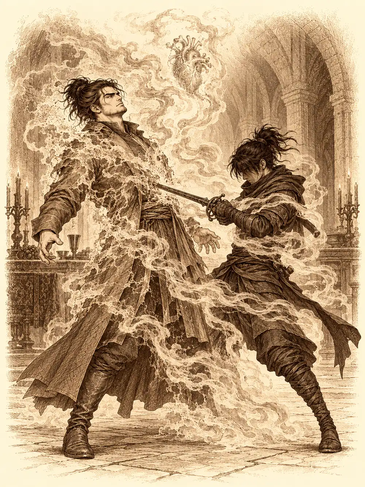

Capítulo 156
Beso de sangre
Libro IX · Mareas y muertos
La sala de palacio olía a aceite de lámpara y a pociones recién destapadas. Calista no se había sentado en toda la mañana. Llevaba la nota de Alister doblada en el cinturón y la tocaba de vez en cuando, como quien comprueba que una herida sigue ahí.
Desde que habían vuelto del fondo del mar, Gelbreak ya no era guardián del shogunato. Era su prometido, y eso le permitía seguir en palacio aunque el cargo lo llevara Wel. No habían celebrado ninguna boda. Ahora, el prometido estaba en manos de un vampiro.
Kurobane había reunido a quien había podido. Guxi traía bajo el brazo un proyecto casi terminado del que no hablaba, y Serafina tenía la cabeza en otra parte, en el deseo de formalizar de una vez lo suyo con él. Verbin había llegado de mala gana, con el pelo rojo recogido.
Kurobane propuso emboscarlos en lugar de entrar de frente, en silencio, por la espalda. Calista estuvo de acuerdo. Wel recibió sus órdenes de guardián: las tropas cerrarían todas las salidas de las alcantarillas para que nadie escapara. El mapa de Archi marcaba un punto morado bajo los barrios bajos, pero no enseñaba túneles ni pasillos, solo el lugar. Calista dejó una cosa clara antes de bajar.
"Vamos a eliminar ese nido. Pero lo primero es sacar a Gelbreak con vida".
Abajo, el agua llegaba por los tobillos y era mejor no pensar en qué era. Calista caminaba sobre ella, y a los demás les concedió el mismo don para que no tuvieran que vadear aquella porquería. Mandó por delante un doble suyo hecho de ilusión, que avanzaba por las esquinas mientras ella se quedaba atrás.
Oyeron ruido en los túneles: pasos, garras arañando la piedra. Y luego una voz conocida. Banzo estaba allí, combatiendo solo contra unas criaturas, empapado y furioso.
"¿Cómo has llegado?".
"Tengo informantes también".
Se había enterado del rapto antes que nadie y había bajado por su cuenta. Se unió a ellos sin más.
Llegaron a la sala donde Calista, Jin y Verbin habían estado la vez anterior: una puerta de piedra manchada de sangre y nichos funerarios llenos de calaveras. El sello que la shogun había dejado en la puerta estaba roto. Alguien había pasado. La puerta no tenía cerradura que se pudiera forzar.
Por las paredes empezaron a bajar sombras. Vampiros.
Mientras los demás los contenían, Calista estudió las inscripciones élficas de la puerta y Verbin leyó en voz alta un acertijo sobre un río de vida y de muerte. La shogun mojó los dedos en la sangre del suelo y la extendió sobre la piedra, y la puerta se abrió. En la refriega, un vampiro vomitó sobre Kurobane algo negro que le quemó la carne y le robó parte de la vida. No lo convirtió en uno de ellos, aunque la herida tardaría en cerrar. Derrotaron a los atacantes.
Al otro lado había varias salas. Banzo, con un don de clarividencia, observó una de ellas a distancia sin moverse de donde estaba y vio una llave. Guxi y Serafina registraron otra llena de cadáveres, que se levantaron en cuanto los tocaron. Fuego y golpes. Calista echó aceite sobre los restos, les prendió fuego con una antorcha y aguantó la puerta con Banzo mientras ardían. Vieron sangre corriendo por debajo de una reja, y Banzo arrancó los barrotes y parte de la pared con las manos para abrirles camino.
Una segunda puerta se tragó las herramientas de Kurobane en cuanto las acercó a la cerradura. Calista le prestó a Verbin una llave que abría cualquier cosa, y no bastó: hacía falta otra. Estaba sobre un pedestal en mitad de una sala cuyo suelo nadie quería pisar. Calista hizo aparecer un disco flotante, Kurobane cruzó sobre él, cogió la llave y saltó de vuelta justo cuando empezaban a abrirse las tumbas a su alrededor. Huyeron dejando fuego tras la puerta. Con las dos llaves, la última cerradura cedió.
"Puede que esté muerto", dijo alguien.
"Me niego", dijo Calista. "Lo revivo. Me sale más barato que buscar otro marido".
Algunos alcanzaron a beberse las pociones. Luego abrieron.
Alister estaba sentado a una mesa preparada para la cena, con platos y copas, y en una de las sillas estaba Gelbreak, atado y amordazado. El vampiro sonrió al verlos y levantó una mano hacia Serafina.
"Serafina. Ven aquí".
Ella fue. No quería y fue. Alister la sentó en un sitio, señaló a Guxi otro frente a ella, "delante de lo que parece tu amor", y a Calista una silla frente a su elfo. La shogun ignoró la orden y avanzó hacia él con el estoque de Aqua en la mano. Alister cerró el puño, y Gelbreak se retorció en su silla con un dolor que no podía gritar.
"¿Te vas a sentar ahí o prefieres estar al lado del elfo?".
Calista siseó entre los dientes, que se le habían afilado como los de un tiburón, y se sentó. Cuando Kurobane se negó a moverse, Alister apretó otra vez y Serafina se dobló sobre la mesa. Calista le ordenó al ninja que se sentara.
"Es agradable estar aquí con todos vosotros", dijo Alister. "Kuroto es muy divertido. Su gente es fácil de atraer". Señaló a unas figuras que lo rodeaban, allegados que había ido ganando en la ciudad. "Y me encantan las historias de los cazadores, ¿verdad, Serafina? Eres muy habladora en los momentos íntimos".
Guxi le lanzó un conjuro y el vampiro lo deshizo con otro. Luego empezó a remover viejas heridas. Le preguntó a Kurobane cuándo se había enterado de lo que había hecho Guxi. Kurobane quiso saber por qué Serafina le había vuelto a dar la pistola a quien ya la había traicionado una vez, y Alister celebró la pregunta. Las respuestas se volvieron reproches: traiciones, promesas del campamento del sur, un anillo. Guxi golpeó la mesa con el puño. Alister los miraba como quien mira una pelea de perros.
"Vaya. Rencillas entre vosotros. Qué interesante".
Y dentro de la cabeza de Guxi sonó una voz.
Dispárale.
Guxi disparó a Kurobane. El ninja recibió los rayos sin moverse y sin devolverlos. Mientras todos miraban, Calista, sin que nadie la viera, conjuró un sirviente invisible que se deslizó hasta la silla de Gelbreak y empezó a desatarle los pies. Banzo, que observaba las cuerdas, se levantó de golpe y le arrojó su arma al vampiro.
La mesa saltó por los aires.
Alister se volvió invisible. Calista deshizo su invisibilidad y él la recuperó un momento después. Los muertos de la sala se levantaron. Verbin cegó a uno de los vasallos y lo remató, y siguió así, uno detrás de otro. Guxi seguía disparando a quien no quería disparar, hasta que el dolor de las heridas lo despertó y se libró de la voz; desde entonces buscaba al señor de aquel nido en el aire vacío.
Las cuerdas de Gelbreak cayeron. Se puso en pie. Tenía la mirada vacía.
"Quietos".
Lo dijo con su voz de bardo, y el grupo entero quedó paralizado. Varios lograron romper el efecto. Serafina no. Algo le arrancó la vida que le quedaba y cayó al suelo. Guxi corrió a curarla.
Calista llegó hasta Gelbreak con una poción en la mano, se la hizo beber y le habló como solo le hablaba a él. El drow parpadeó.
"Cariño, ¿eres tú?".
Era él. Ella le puso una espada en la mano y Gelbreak se volvió contra el vampiro. Kurobane encontró a Alister en su escondite invisible y le clavó el estoque dos veces. Banzo contenía a los vasallos con el cuerpo y, en un momento, levantó al ninja y lo lanzó hacia el señor de la casa. Pero el nido tenía su propia voluntad: drenaba la vida de los que estaban en él, levantaba más muertos y con todo eso curaba a Alister.
Serafina volvió a caer. Esta vez estuvo a punto de no volver. Banzo y Guxi la levantaron entre los dos, con una curación y una poción, y el goliat la apartó del alcance del vampiro. Calista paraba conjuros con conjuros, curaba a quien podía y levantó por primera vez el estoque de la perla para darles una orden que les permitía golpear todos a la vez. Un conjuro de muerte buscó a Kurobane, y el ninja aguantó.

El último golpe fue suyo. Su estoque se volvió negro y atravesó el pecho de Alister, y el corazón del vampiro le salió por la espalda. Entonces el cuerpo y el corazón se convirtieron en niebla, y la niebla pasó a través de Kurobane y se fue.
"Se ha escapado", dijo Calista. "Al menos el nido está destruido".
Kurobane se arrancó el collar de cazador, lo tiró al suelo y se marchó corriendo.
Banzo lo recogió. Gelbreak se acercó a mirar.
"Pero el contrato sigue, ¿no? Aunque se quite el collar".
Sí. El contrato seguía.
Serafina estaba en blanco. Casi se había muerto, y no sabía cómo reaccionar a todo lo demás. Guxi la abrazó. "No estoy bien", le dijo ella. "Vámonos a casa". Él le respondió que no sabía qué iba a pasar, pero que estarían juntos.
Verbin le dedicó a Calista una sonrisa torcida. "Algunos de tus cazadores deberían entrenar más". Y se marchó.
Calista habló con Serafina y con Guxi antes de irse. No quería regañarlos, les dijo, solo darles un toque de atención. Lo que había pasado en aquella mesa, los reproches entre compañeros en mitad de una misión, no podía repetirse. Les dio una poción a cada uno.
Gelbreak la retuvo un momento. Metió la mano en el bolsillo y le colocó en el pelo un broche pequeño. Era lo que había salido a buscar la noche en que lo habían capturado. A Calista se le puso la piel un poco más azul.
"No hacía falta".
Luego le encargó a Banzo que escoltara a los heridos y le dijo que se iba a buscar a Kurobane. Gelbreak le preguntó si se fiaba de él.
"No. Pero soy la responsable de todos los cazadores y respondo por ellos".
Lo encontró en las cloacas. Kurobane le apuntó con el estoque y ella desvió el filo con el suyo, suavemente.
"Creo que necesitas hablar".
Él le dijo que el contrato seguía vigente aunque hubiera tirado el collar, que lo cumpliría. Le enseñó dos libros que llevaba encima: uno de la biblioteca de palacio sobre las esferas y otro que ella le había dado sobre los cultistas. "Tengo dos metas. No persigo personas, persigo metas". Calista le dijo que comprendía que el corazón roto fuera difícil de llevar, pero que, si cada vez que se le rompía iba a actuar así, aquello no era propio de un adulto, y que sus asuntos sentimentales no podían volver a poner en peligro una misión. Le dio una curación y lo dejó ir.
Mientras volvían a la base, Gelbreak le contaba a Banzo que habían sido seis o siete vampiros los que lo habían atacado. Banzo lo miró con cara de no creerse ni la mitad.
Al llegar recibieron su paga. Gelbreak le dio a Serafina unas vendas ensangrentadas que le había quitado a uno de los enemigos. Tenían una fuerza antigua, y quien supiera concentrar su energía podría descargar con ellas un golpe especial.
Banzo pasó por el portal desde la base de Ukio y se encontró en Sho algo que le recordaba demasiado a lo de allí. Abrió el cofre de los trofeos y pensó en lo que habían conseguido otros cazadores, en los tiempos en que la casa estaba llena de vida. Pasó la noche dándole vueltas al collar de Kurobane entre los dedos. Aquello ya no se parecía a los cazadores que había conocido. Al amanecer se levantó y salió a la calle.
En una taberna se encontró con Calista y Gelbreak. Hablaron de los conflictos de los cazadores, del grupo partido en pedazos. Calista le explicó que había pedido el compromiso para asegurarse la libertad y que no la presionaran con el puesto de guardián, y Banzo los felicitó. Le enseñó sus notas para acabar con una demonio relacionada con los engaños de Rua. Ellos le hablaron de los sacrificios y del peligro, y él insistió en que lo primero era Otakemaru. Quería mandar a Guxi, a Serafina y al ninja a una misión que los obligara a trabajar juntos, quería un duelo con Kurobane, quería la ayuda de Sirth para un ritual pendiente. Calista le contó lo que Arwen le había dicho del bosque.
Pensaron en un festival, en un torneo que levantara la moral e integrara a los tritones. Gelbreak, con una orden mágica, obligó a Calista a admitir que quería competir para ganarse el respeto. Banzo sacó el tema de la boda, y los dos acabaron reconociendo que les gustaría celebrarla, sin ningún dios delante, solo con los más cercanos. Señalaron a Banzo como padrino. Él se ofreció a oficiarla y habló de banquetes, de combates, de cabezas de cabra. Gelbreak apostó que, si ganaba el reto que estaban urdiendo, sería shogun por un día.
Archi entró en palacio por una ventana del segundo piso, invisible, guiado por su pequeño robot espía. Se disfrazó de sirvienta y mandó a las niñas al jardín en nombre de Calista, lo que apartó a dos guardias. Luego se disfrazó de tritón, se equivocó de escalera y se dio de bruces con Wel, que le habló en una lengua que no entendía. La salida de Calista y Gelbreak distrajo al general y el gnomo volvió al camino correcto. En el último piso fingió el ruido de un cristal roto para alejar a los guardias de la habitación real.
Dentro, su detector señaló una puerta que vibraba de energía. Reconoció y disipó un símbolo de la muerte, y unos sirvientes metálicos diminutos abrieron la cerradura desde dentro. En la tesorería no tocó nada de lo que brillaba. Fue derecho a un cofre reforzado que su aparato marcaba, lo estudió y fabricó con su propio cofre secreto una réplica que solo un ojo experto o la magia distinguirían. Cambió uno por otro, mandó el original a otro plano y dejó en la puerta una imitación de la runa, que solo lo parecía. Salió escondido entre la ropa sucia, encogido dentro de un cesto que acabó en el vertedero de Sho, del que emergió apestando y satisfecho.
En su taller movió un cuadro, un libro, un pedestal. Un cuarzo dirigió la luz hacia un espejo, el espejo hacia una puerta oculta, y una palabra en la lengua de los gnomos la abrió. Dentro había algo entre un portal y un altar. La voz de su cabeza celebró que se acercaba su gran momento. Archi sacó el cofre robado. La cerradura estaba protegida por varios símbolos enlazados, y activar uno podía activarlos todos. Reconoció seis, entre ellos Muerte, Sueño y Desesperación, y sospechó que había más. No lo abrió.
Channi jugaba a esconderse por las calles, aunque todo el mundo la veía, cuando reconoció a Kurobane en un tejado.
"¡Tezca!".
Él bajó, la sentó en su hombro y escuchó sus noticias. Un hombre pequeño con bigote había hablado en palacio de piedras, de una máquina para escuchar y contar cosas y de unas esferas peligrosas que no le habían querido dar. La mujer azul y el hombre gruñón se iban a casar. Y unos tritones habían querido comérsela, aunque admitió que eso lo había deducido ella. Kurobane le dio semillas y le dijo que no se fiara de los hombres pez.
"Si alguna vez ves a alguien como yo con los ojos azules, no seré yo".
Mientras lo decía, sus ojos, uno azul y otro rojo, se volvieron rojos los dos. Acordaron que Tezca sería su palabra secreta. Le explicó que en su cuerpo vivía alguien más, y que, si ese otro salía, Tezca podía desaparecer. No le dijo su nombre. Channi le dijo que lo quería mucho. Él la llevó a la base.
Se sentó en las escaleras con ella en el regazo. La pequeña notó que sufría y se ofreció a curarlo. Él le dijo que tenía que cuidar el bosque y se levantó hacia el portal. Channi corrió detrás y le tiró de la capa: era cazadora, había firmado un contrato, quería ir con él. Kurobane le pidió que se quedara y siguiera averiguando cosas sobre la mujer pez amable y lo demás. Si lo necesitaba, podría encontrarlo siguiendo su olor. Channi aceptó entre lágrimas y volvió a su cuarto, a la almohada de siempre, sin saber si podría dormir.
Un guardia del shogunato huía por un callejón con la respiración rota. Tropezó entre unos escombros y cayó. Una figura oscura se acercaba despacio.
"Te lo he dicho", suplicó. "Lo que buscas está en palacio. Es la shogun. Me lo prometiste".
"Las promesas de tu raza no valen nada".
Sonó un disparo.